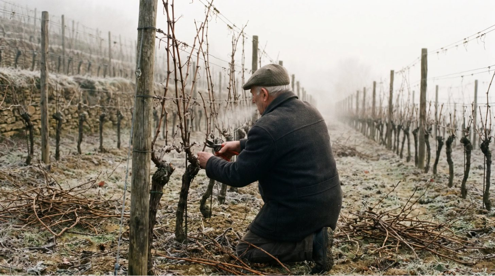
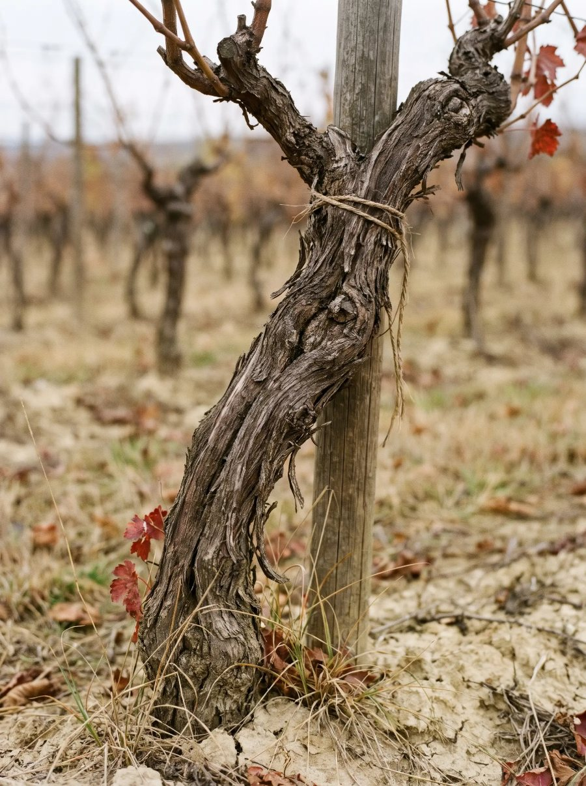
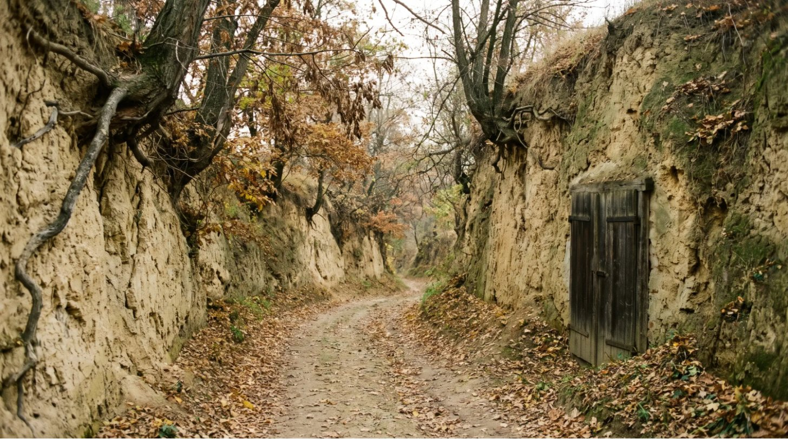
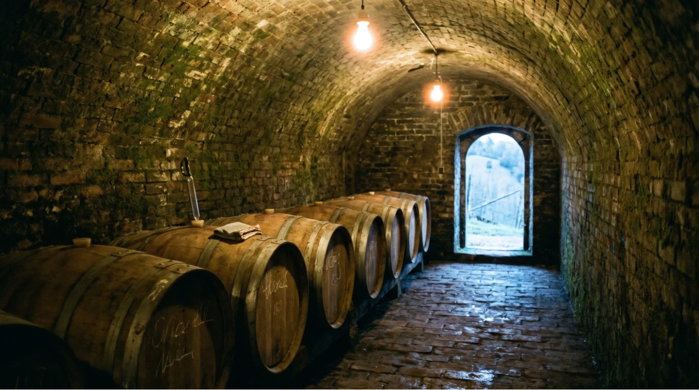

1994
Két hektár kadarka. Apánk, Kőhalmi István megveszi az Iván-völgy alsó teraszát, hatvanas években telepített tőkékkel. Azt mondja, a kadarkát úgysem veszi meg senki, legalább nekünk marad. Az első évben négyszáz palack készül.
Birtok · Szekszárd, Iván-völgy
Tizenkét hektár szőlő három dűlőben, egy löszbe vájt pince, és három ember, aki mindezt megműveli. Itt elmondjuk, honnan jövünk, és hogyan dolgozunk.

Négy évszám. A többi évben is dolgoztunk, csak azokról kevesebb a mesélnivaló.
Két hektár kadarka. Apánk, Kőhalmi István megveszi az Iván-völgy alsó teraszát, hatvanas években telepített tőkékkel. Azt mondja, a kadarkát úgysem veszi meg senki, legalább nekünk marad. Az első évben négyszáz palack készül.
Saját feldolgozó. Addig a nagyszüleink présházában préseltünk, kézi préssel. Megépül a feldolgozó a pince fölé, és megjön az első három ászokhordó. A birtok ekkor hét hektár.
Hazajövünk. Anna átveszi a pincét, Bence a vendégeket és a rendeléseket. Apánk azóta csak a szőlőben dolgozik, és azt mondja, ott mindig is jobban szeretett lenni.
Új telepítés a Porkolábban. A dűlő felső részére cabernet franc kerül, egy hektáron. Az első termését idén szüreteltük; ha jó lesz, 2028-ban kerül a bikavérbe.

Szekszárdon a szőlő vastag lösztakarón áll. A lösz jól tartja a vizet és gyorsan melegszik, ettől lesznek a boraink kerekek, a tanninjaik pedig puhák.
Az Iván-völgy felső teraszán vörösagyag keveredik a löszbe, onnan jönnek a feszesebb, hosszabb kékfrankosok. A Baranya-völgy homokosabb és hűvösebb, oda ültettük a fehéret és a rozé alapanyagát.
A legöregebb tőkéink hatvanévesek, karó mellett, fejművelésben állnak. Keveset teremnek, kézzel kell metszeni és szüretelni őket. Nem cserélnénk le egyet sem.
| Dűlő | Terület | Talaj | Amit ad |
|---|---|---|---|
| Iván-völgy | 5,2 ha | Lösz, vörösagyag | Kékfrankos, kadarka |
| Porkoláb | 4,1 ha | Mély lösz | Merlot, cabernet franc, a bikavér alapja |
| Baranya-völgy | 2,7 ha | Homokos lösz | Olaszrizling, a rozé és a siller kékfrankosa |

A löszmélyút, amelyen a szőlőbe járunk. Az ajtó mögött a szomszéd pincéje van.
A pincét a nagyapánk vájta a löszfalba, téglával boltozta, és azóta télen-nyáron tizenkét fok van benne. Ennél jobb klímát nem tudnánk venni.
A vörösek ötszáz és ezer literes ászokhordóban érnek, tizenkét-húsz hónapig. Újfahordót csak a két dűlőválogatásnál használunk, ott is legfeljebb a bor harmadára. A fehér, a rozé és a siller acéltartályban készül, hogy friss maradjon.
Nem szűrünk többet a szükségesnél, és nem siettetjük a palackozást. Ha egy hordó még nem kész, vár még egy telet.

Szüretkor húszan, de az év többi részében hárman. Ha felhívsz, valamelyikünk veszi fel.
Ő telepítette a birtok felét, és ma is ő metsz meg minden öreg tőkét. A traktort nem adja ki a kezéből.
Borász. Ő dönt arról, mi mikor kerül palackba, és ő írja a pincenaplót is, amikor eszébe jut.
Ő vezeti a kóstolók nagy részét, és ő csomagolja a kartonokat. Ha késik a futár, őt keresd.
A Birtokkóstolón végigmegyünk a pincén, a Dűlőválogatáson a szőlőbe is kisétálunk.